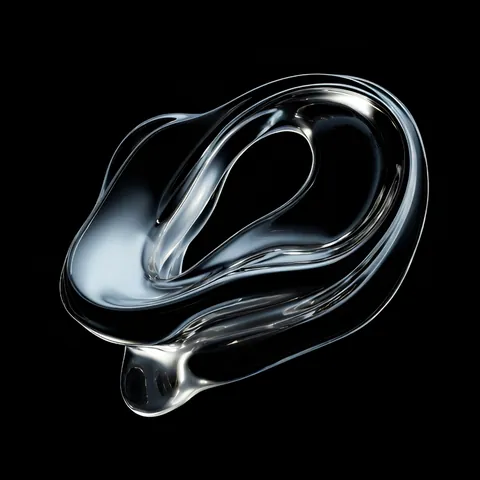
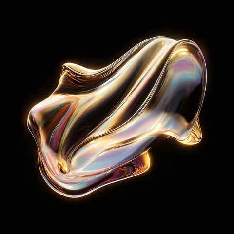

Mockup · the whole About page, new structure · resize to see 375 px
RELICS Capsule 3
about · the house
The house of Neon Relics
A small jewelry house in SoHo, New York. Four characters, six relics. Every piece is made once and fitted in person.
Explore collection- 03

- 006

- 04

- 05

- 008

- The capsule
- 4 looks · 6 relics
- Editions
- Every piece exists once
- The atelier
- By appointment · SoHo, New York